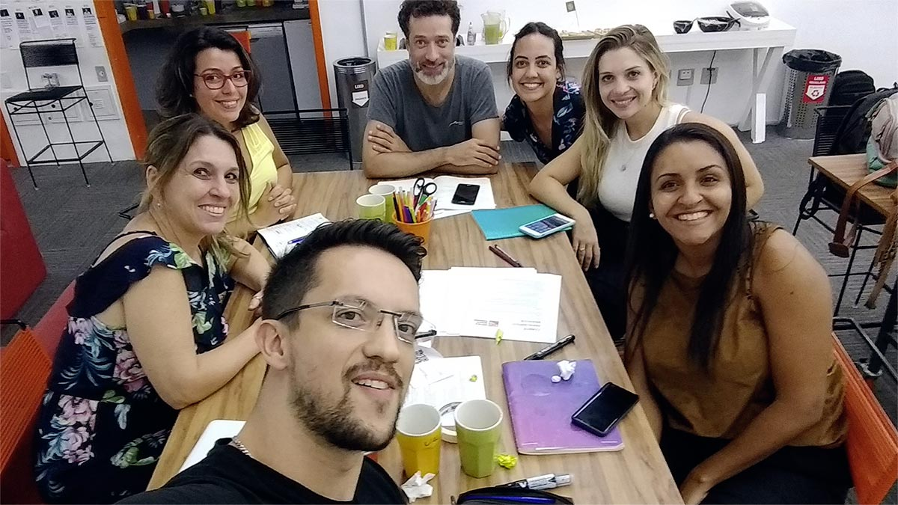
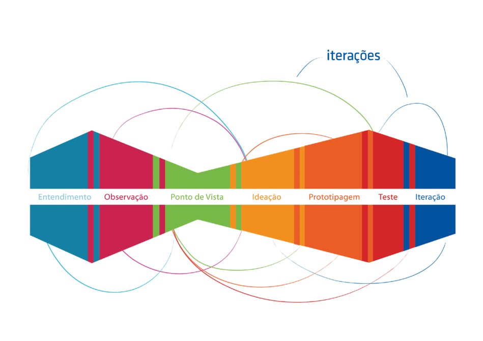

Gabi Margutti - Profissão
Lana Rodrigues - Profissão
Leandro Zambelli - Designer
Valéria Soares - Profissão
Vivian Enz Quaresma - Profissão
Wagner Bernardo - Profissão
Facilitadora:
Stephany Santana

Este documento tem como objetivo compartilhar a jornada pela qual nós passamos ao trabalhar com o desafio proposto pelo nosso cliente.
Orientados pelo Design Thinking, abordagem ilustrada na imagem acima, colocamos o Ser Humano como centro do nosso projeto e os 3 grandes valores permearam durante todas as fases: empatia, colaboração e experimentação.
Selecionamos alguns registros (entrevistas, pesquisas, imagens, entre outros) mais representativos para você acompanhar nossa jornada do briefing à solução. Desejamos que a leitura dessa documentação seja tão divertida e enriquecedora assim como foi o projeto para nós.
Iniciamos o nosso entendimento escrevendo em post-it tudo o que achávamos estar relacionado com o desafio inicial. Escrevemos sobre lugares, pessoas, investimento, governos, eventos, paixões, família e etc.
A partir daí, agrupamos os post-it's em categorias e os relacionamos entre si.
Surgiram vários nomes de categorias, mas os que concluimos ser mais importantes foram os seguintes:
Listamos todas nossas certezas, suposições e dúvidas sobre o assunto. Ao final de nossa pesquisa; Ao mesmo tempo, isso nos deu no norte sobre um roteiro de entrevistas.
A primeiro momento fomos atrás de informações na web. Pesquisamos o máximo possível de informações relacionadas com os tópicos definidos no nosso mapa de sistemas.
Agrupamos todo o conteúdo achado e os classificamos para posterior investigação.
A partir daí, decidimos entrevistar as pessoas, dentre elas, torcedores, atletas, patrocinadores e familiares.
blablablabla A primeiro momento fomos atrás de informações na web. Pesquisamos o máximo possível de informações relacionadas com os tópicos definidos no nosso mapa de sistemas.
Agrupamos todo o conteúdo achado e os classificamos para posterior investigação.
A partir daí, decidimos entrevistar as pessoas, dentre elas, torcedores, atletas, patrocinadores e familiares.